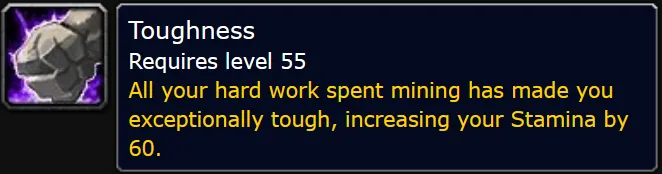

WotLK Warmane Icecrown - Mining 1 to 450 (x3) and Bonuses
Toughness bonus, addons, smelting and mining routes, trainers.
Mining Bonus
Toughness (Mining Passive Bonus) : Scales with your mining skill.

Addons
Gather Mate 2
Gather Mate allows you to record your personal route (it records the herb locations) and optimize your route around the herbs you personally find.
Link : https://warperia.com/addon-wotlk/gathermate2/
Farm Hud
Make your gathering life easier with FarmHud. This addon will turn your minimap into a hud, which will make tracking your herbs and ores easier.
Link : https://warperia.com/addon-wotlk/farmhud/
Leveling Mining from 1 to 450
Required Materials
SOME CRAFTS ARE YELLOW.
YOU MIGHT NEED MORE MATERIALS THAN LISTED HERE.
GET MORE MATERIALS.
(usually add 3 or 5 for each material)
| Classic Ores | TBC Ores | WotLK Ores |
|---|---|---|
40 Copper Ore 36 Tin Ore 36 Copper Bar 36 Tin Bar 5 Silver Ore 19 Iron Ore 8 Gold Ore 69 Mithril Ore 33 Truesilver Ore |
82 Fel Iron Ore 16 Adamantite Ore |
39 Cobalt Ore |
| TSM Shopping Strings | ||
Copper Ore/exact/x40 Tin Ore/exact/x36 Copper Bar/exact/x36 Tin Bar/exact/x36 Silver Ore/exact/x5 Iron Ore/exact/x19 Gold Ore/exact/x8 Mithril Ore/exact/x69 Truesilver Ore/exact/x33 |
Fel Iron Ore/exact/x82 Adamantite Ore/exact/x16 |
Cobalt Ore/exact/x39 |
Leveling 1-450 (Alliance)
There are 2 methods of leveling Mining,
-
Smelting Ores
-
Mining Deposits
Smelting Ores
For leveling most of 1-375 in this guide you can Smelt your way to the top instead of actually having to go out and mine the ore yourself. It will level you up a lot faster.
Classic
| Level | Craft | Quantity | Total Material |
|---|---|---|---|
| Learn Apprentice Mining | |||
| 1-67 | Copper Bar | 40 | 40 Copper Ore |
| 67-76 | Tin Bar | 36 | 36 Tin Ore |
| Learn Journeyman Mining at 50 | |||
| 76-115 | Bronze Bar | 36 | 36 Cooper Bar, 36 Tin Bar |
| 115-127 | Silver Bar | 5 | 5 Silver Ore |
| Learn Expert Mining in Duskwood at 125 | |||
| 127-157 | Iron Bar | 19 | 19 Iron Ore |
| 157-175 | Gold Bar | 8 | 8 Gold Ore |
| 175-232 | Mithril Bar | 69 (Learn Artisan Mining at 200) |
69 Mithril Ore |
| Learn Artisan Mining at 200 | |||
| 232-292 | Truesilver Bar | 33 | 33 Truesilver Ore |
TBC
| Level | Craft | Quantity | Required Materials |
|---|---|---|---|
| Learn Blacksmithing at 275 | |||
| 292-301 | Mine 3 Fel Iron deposit in Hellfire Peninsula | Hellfire Peninsula | |
| 301-325 | Fel Iron Bar | 41 | 82 Fel Iron Ore |
| 325-340 | Adamantite Bar | 8 | 16 Adamantite Ore |
| 340-352 | Mine Adamantite or Fel Iron deposit in Outland | Zangarmarsh (recommended), Blade's Edge Mountains, Nagrand, Netherstorm, Shadowmoon Valley, Terokkar Forest | |
Wotlk
| Level | Craft | Quantity | Required Materials |
|---|---|---|---|
| Learn Blacksmithing in Dalaran or Valiance Keep 350 | |||
| 352-376 | Cobalt Bar | 39 | 39 Cobalt Ore |
| 376-400 | Mine Cobalt Deposit, Rich Cobalt Deposit | Borean Tundra, Dragonblight (recommended by the shore), Howling Fjord, Grizzly Hills, Zul ‘Drak (recommended) | |
| 400-450 | Saronite Deposit (400), Rich Saronite Deposit (425) | Wintergrasp (recommended), Storm Peaks (recommended), Icecrown, Sholazar Basin | |
Mining Deposits
Classic
| Level | Deposit | Zone / Required Materials |
|---|---|---|
| Learn Apprentice Mining | ||
| 1-67 | Copper Vein | Elwynn Forest |
| Learn Journeyman Mining in Duskwood at 50 | ||
| 67-127 | Tin Vein (65), Silver Vein (75) | Duskwood |
| Learn Expert Mining in Duskwood at 125 | ||
| 127-175 | Iron Vein (125), Gold Vein (155) | Stranglethorn Vale (North) |
| 175-223 | Mithril Deposit (175), Truesilver Deposit (205) | Stranglethorn Vale (South), Searing Gorge |
| Learn Artisan Mining at 200 | ||
| 223-232 | Mithril Deposit (175), Truesilver Deposit (205) | Stranglethorn Vale (South), Searing Gorge |
| 232-277 | Dark Iron Deposit (230), Small Thorium Vein (230), Rich Thorium Vein (255) | Burning Steppes |
TBC
| Level | Deposit | Zone / Required Materials |
|---|---|---|
| Learn Blacksmithing in Hellfire Peninsula or Shattrath 275 | ||
| 277-325 | Fel Iron Deposit (275) | Hellfire Peninsula (recommended), Terokkar Forest, Zangarmarsh |
| 325-352 | Adamantite Deposit (325) | Zangarmarsh (recommended), Blade's Edge Mountains, Nagrand, Netherstorm, Shadowmoon Valley, Terokkar Forest |
WotLK
| Level | Deposit | Zone / Required Materials |
|---|---|---|
| Learn Blacksmithing in Dalaran or Valiance Keep 350 | ||
| 352-400 | Cobalt Deposit (350), Rich Cobalt Deposit (375) | Borean Tundra, Dragonblight (recommended by the shore), Howling Fjord, Grizzly Hills, Zul ‘Drak (recommended) |
| 400-450 | Saronite Deposit (400), Rich Saronite Deposit (425) | Wintergrasp,(recommended), Storm Peaks (recommended), Icecrown, Sholazar Basin |
Mining Trainers
| Horde | Alliance | Neutral |
|---|---|---|
| Makaru – Orgrimmar | Geofram Bouldertoe – Ironforge | Fono – Shattrath City |
| Brom Killian – Undercity | Gelman Stonehand – Stormwind City | Hanlir – Shattrath City |
| Brek Stonehoof – Thunder Bluff | Kurdram Stonehammer – Darkshore | Jedidiah Handers – Dalaran |
| Johan Focht – Silverpine Forest | Matt Johnson – Duskwood | |
| Krunn – Durotar | Yarr Hammerstone – Dun Morogh | |
| Pikkle – Tanaris | Pikkle – Tanaris | |
| Belil – Silvermoon City | Muaat – The Exodar | |
| Krugosh – Hellfire Peninsula | Hurnak Grimmord – Hellfire Peninsula | |
| Jonathan Lewis – Howling Fjord | Grumbol Stoutpick – Howling Fjord | |
| Brunna Ironaxe – Borean Tundra | Fendrig Redbeard – Borean Tundra |
Sources
https://warmane-guides-and-updates.blogspot.com/2012/10/mining-guide-1-450.html
https://www.wow-professions.com/wotlk/mining-leveling-guide-wotlk-classic
https://legacy-wow.com/wotlk-mining-guide/